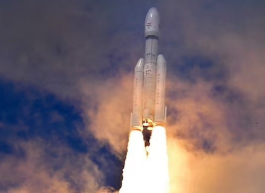

Chandrayaan-3 is the third Indian lunar exploration mission under the Indian Space Research Organisation's (ISRO) Chandrayaan programme. It consists of a lander named Vikram and a rover named Pragyan, similar to those of the Chandrayaan-2 mission. The propulsion module carried the lander and rover configuration to lunar orbit in preparation for a powered descent by the lander. Chandrayaan-3 was launched on 14 July 2023. The lander and rover landed at the lunar south pole region on 23 August 2023 at 18:02 IST, making India the first country to successfully land a spacecraft near the lunar south pole and the fourth country to soft-land on the Moon.

On 22 July 2019, ISRO launched Chandrayaan-2 on board a Launch Vehicle Mark-3 (LVM3) launch vehicle consisting of an orbiter, a lander and a rover. The lander was scheduled to touch down on the lunar surface in September 2019 to deploy the Pragyan rover. The lander ultimately crashed when it lost contact with earth (ISRO) and deviated from its intended trajectory while attempting to land.Following Chandrayaan-2, Chandrayaan-3 and further lunar missions were proposed.The European Space Tracking network (ESTRACK), operated by the European Space Agency (ESA), is supporting the mission. Under a new cross-support arrangement, ESA tracking support could be provided for upcoming ISRO missions such as those of India's first human spaceflight programme, Gaganyaan, and the Aditya-L1 solar research mission. In return, future ESA missions will receive similar support from ISRO's own tracking stations.

1. Getting a lander to land safely and softly on the surface of the Moon.
2. Observing and demonstrating the rover's driving capabilities on the Moon.
3. To map the lunar surface and help to prepare 3D maps of it